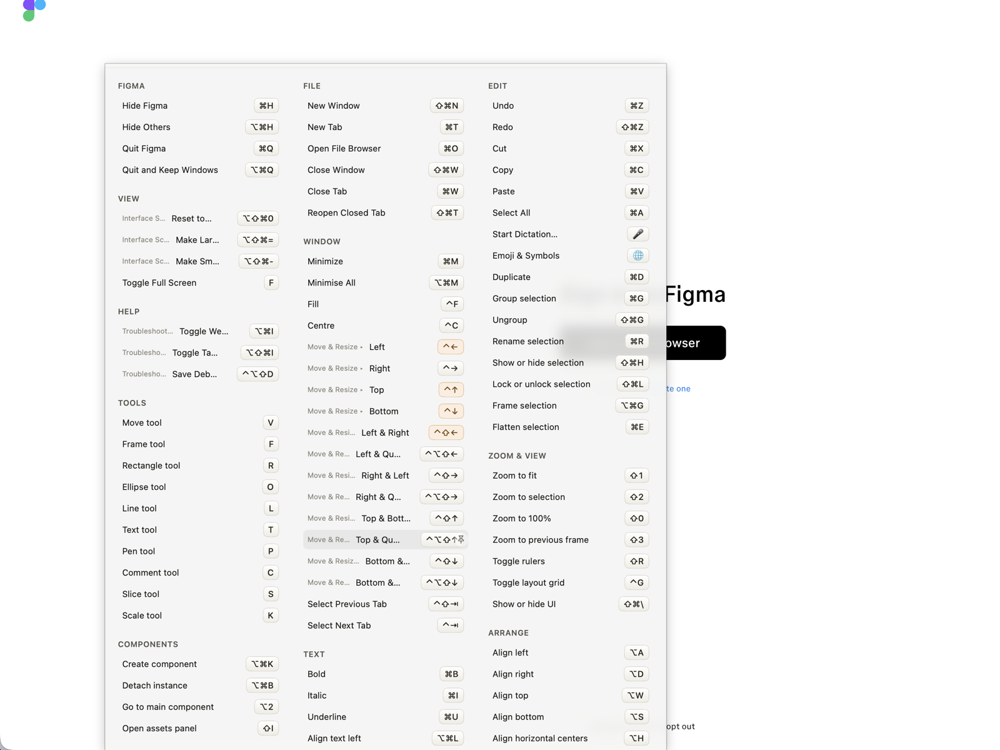

Keysi lee en directo los menús de una app, así que puede enseñarte todos los atajos de la app que uses sin que nadie mantenga una lista. Algunas apps se escapan: Vim y tmux no tienen menús de macOS, y las apps de Electron como Slack guardan sus combinaciones reales fuera de la barra de menús.
Para esas, Keysi incluye hojas escritas a mano. Son gratis, no forman parte de Keysi Pro y puedes partir de cualquiera.
Para las apps cuyos atajos sí están en la barra de menús, consulta las listas de atajos por app (en inglés), leídas directamente de esos menús.
10 hojas · 381 atajos.
| App | Atajos | Se asocia por |
|---|---|---|
| Emacs | 32 | Proceso en primer plano del terminal |
| Excel | 29 | Bundle ID |
| Figma | 43 | Bundle ID |
| Ghostty | 31 | Bundle ID |
| Notion | 46 | Bundle ID |
| Obsidian | 35 | Bundle ID |
| Slack | 29 | Bundle ID |
| tmux | 37 | Proceso en primer plano del terminal |
| Vim | 73 | Proceso en primer plano del terminal |
| Word | 26 | Bundle ID |

Cualquier app puede tener una. Una hoja es un archivo JSON en ~/Library/Application Support/Keysi/Sheets/ que indica la app y los atajos que quieres listar, y el editor integrado de Keysi puede escribirlo por ti. Pon mode en augment para sumarlos a lo que Keysi encontró en los menús de la app, o en replace para descartarlo, que es lo que quieres con una app de Electron cuya barra de menús no coincide con sus combinaciones reales.
Descarga cualquiera de las hojas de arriba como punto de partida.
Las hojas personalizadas son gratis. También el editor, y todo lo demás de esta página.